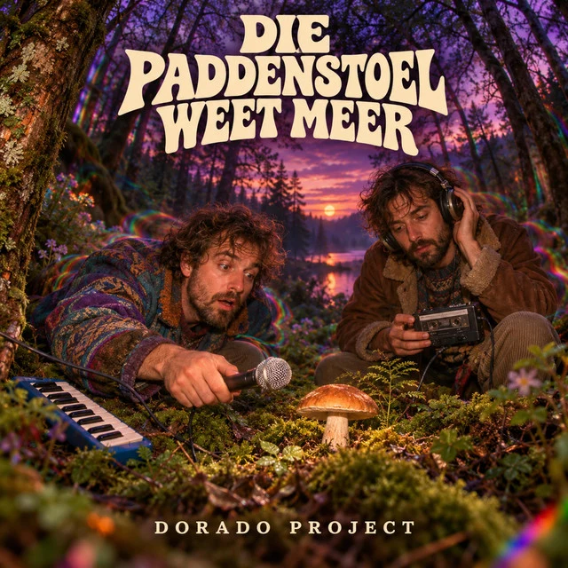

SINGLE · OP SPOTIFY
Die Paddenstoel Weet Meer
Gesproken verhaal / Psychedelische comedy
Een absurd Nederlandstalig gesproken verhaal over twee knetterstonede gasten en een paddenstoel die meer lijkt te weten dan zijzelf. Een muzikale dwaaltocht met één heldere les: eet geen vreemde paddenstoelen.
Luister op Spotify →